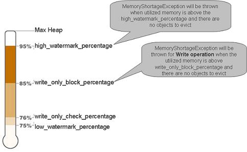
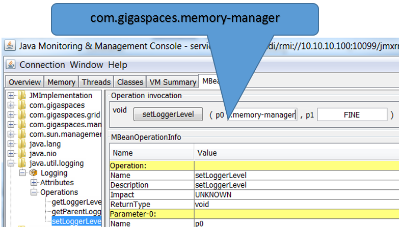
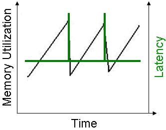
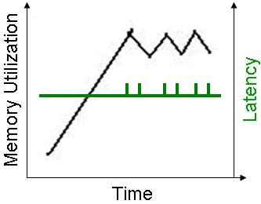
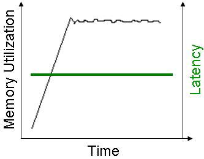

When running in LRU cache policy mode, the space evicts the "oldest" objects from its memory. "Oldest" objects are determined by the time they were written, updated or read in the space. In a persistent space mode, evicting a space object means that a space object is simply be removed from the space memory, but is still be available through the underlying RDBMS. The space reloads this object back into the space memory only if it was requested by a specific read operation.
The space memory manager uses a dedicated thread called Evictor - this thread handles the eviction of objects and identifying memory shortage events. In general, eviction can be done using:
Max amount of space objects - evicts objects one by one. Does not use batches. Very moderate mechanism. Turned on by default when running in LRU mode.
Available memory - eviction is done in batches.
Evicting an object from the space requires the space engine to lock the LRU chain during the object removal, and to update the relevant indexes. This means that the eviction based on available memory that is done in batches, might impact the space responsiveness to client requests. Still, you might need to use this in case you can't estimate the amount of objects within the space.
For applications that use a very large backend database, leveraging the space as a front-end distributed cache using the LRU cache policy can speed up read activity while keeping some of the data in memory. In this case - the motivation is to access the database in the most optimal manner when performing data access operations against the space to reduce the load on the database as much as you can.
When using read, readById or readByIds operations performing a lookup for a single specific object(s), that cannot be found within the space (this is often referred to as a "cache miss"), the database access by the space is very optimal. Only one row is retrieved from the database per object lookup via the Space Data Source implementation. This will be conducted from the relevant partition only.
But when performing queries using readMultiple or GSIterator with a template or a SQLQuery, the returned result set that may involve relatively large amount of objects. In such case, a space running with the LRU cache policy is very likely to retrieve large amount of data from the database:
When using readMultiple having Integer.MAX_VALUE as the max_objects parameter, every partition will access the database (parallel database access). This may overload the database.
When using readMultiple having max_objects < Integer.MAX_VALUE the database might be accessed even if there are enough objects matching the query criteria across all the space partitions.
When loading data from the database, a data eviction process may be triggered. This may impact the performance.
Database access may involve reading objects that will not be loaded into the space (result set with non-matching routing value that are filtered out by the partition).
In order to minimize the potential database overhead above, the LRU cache policy is recommended mostly for applications that use the read, readById or readByIds operations.
Constructing read operations using SQLQuery with Order by, Group by is not recommended either, because in many cases it requires traversing the entire result data set on the client side. In such cases, the preferred option is to perform the query directly against the database and select only the IDs, and then retrieve the actual data from space using the readById or readByIds operations. When working with a partitioned space, it is recommended to store the routing value in a separate database column, and select it as so that the readById or readByIds operations will be more efficient.
The eviction activity running with the LRU policy is performed independently by each Space instance. There is no replication activity associated with the eviction activity. This means that when a primary instance performs an eviction activity, the evicted objects may not be evicted from the backup instance and vice versa. This can result in different object counts between the primary and backup instances (or different replicas). The LRU mechanism assumes a that a database is used to store all the data, where a cache miss triggers a data reload (via the data source or client activity) from the database.
MEMORY_ONLY_SEARCH ModifierThe MEMORY_ONLY_SEARCH modifier may be used to instruct the space to limit the query / template matching performed with read/take/clear/change operations to the data stored only in memory and not the space's backend persistence store (database). This give you the flexibility of minimizing the database load in cases where this modifier can be applied.
This is very useful When running with the LRU cache policy and deploying a Polling Container. By default in such case, all read, take and clear operations will be conducted both against the space and the underlying persistent store. By using the UseMemoryOnlySearch Polling Container property, the operations invoked by the polling container will only access the space when conducting the search, without interacting with the persistent store.
Here's a polling container example using the MEMORY_ONLY_SEARCH modifier:
SingleReadReceiveOperationHandler receiveOperationHandler = new SingleReadReceiveOperationHandler();
receiveOperationHandler.setUseMemoryOnlySearch(true);
SimplePollingEventListenerContainer pollingEventListenerContainer =
new SimplePollingContainerConfigurer(space)
.template(new Data())
.receiveOperationHandler(receiveOperationHandler)
.eventListenerAnnotation(new Object() {
@SpaceDataEvent
public void eventHappened() {
//do something meaningful
}
}).pollingContainer();
Here are examples of using the MEMORY_ONLY_SEARCH in various operations:
Data result0 = gigaspace.readById(idquery , 0 , ReadModifiers.MEMORY_ONLY_SEARCH);
ReadByIdsResult<Data> idsResult = gigaspace.readByIds(idsquery , ReadModifiers.MEMORY_ONLY_SEARCH);
Data result1[] = gigaspace.readMultiple(query , 1000 , ReadModifiers.MEMORY_ONLY_SEARCH);
Data result2 = gigaspace.take(query , 0 , TakeModifiers.EVICT_ONLY.add(TakeModifiers.MEMORY_ONLY_SEARCH));
gigaspace.clear(query , ClearModifiers.EVICT_ONLY.add(ClearModifiers.MEMORY_ONLY_SEARCH));
Data result3[] = gigaspace.takeMultiple(query , 1000 , TakeModifiers.EVICT_ONLY.add(TakeModifiers.MEMORY_ONLY_SEARCH));
The TakeModifiers.EVICT_ONLY and ClearModifiers.EVICT_ONLY should be used as well with the take and clear operations to remove matching entries only from the memory and not from the persistent store.
LRU eviction has 2 eviction strategies:
Based on the maximum amount of objects within the space
Provides VERY deterministic behavior of the garbage collection and memory used and space responsively. With a reasonable client request rate, this provides very constant behavior without client hiccups when memory is reclaimed by the JVM. This runs by default when you have an LRU cache policy. In order to turn it off, you should have a very large number for the cache size property. This strategy checks the amount of space objects, and evicts the relevant object. One object is evicted when the maximum amount of objects is reached. This eviction routine is called when:
Writing a new object into the space.
A transaction is committed or rolled-back.
Based on the amount of available memory the JVM hosting the space has
When using this strategy, you should perform some tuning to provide deterministic behavior. This strategy is turned on when the space-config.engine.memory_usage.enabled value is true. Setting it to primary-only means it's enabled on the primary instance and disabled on the backup. If the backup becomes the primary it's automatically enabled. This strategy is very complicated to use when you have multiple spaces running within the same JVM.
LRU eviction based on the amount of available memory, performs the following:
Check used memory. If not breached, the space-config.engine.memory_usage.high_watermark_percentage exits. If yes, it starts the eviction cycle:
Start eviction loop
Evicts a batch - this releases objects from the space.
Objects evicted? If not - exit the eviction loop.
Wait for the JVM to start garbage collection to reclaim the released memory. The more objects are evicted in one batch, the more time it takes to reclaim the memory. This wait time is configured using the space-config.engine.memory_usage.retry_yield_time parameter. This step makes sure that the eviction cycle does not evict too many objects. This problem manifests itself when the check used memory phase is called, where the memory of the evicted objects has not been reclaimed yet, causing the JVM to return a wrong result for the used memory.
Check used memory. See below for the exact calculation that is performed.
If the amount of memory used has been breached, the low watermark percentage then exits the eviction loop.
Increase the eviction counter by one value.
If the eviction counter value is larger than space-config.engine.memory_usage.retry_count, throw a MemoryShortageException.
End eviction loop
If the amount of memory used, is above the space-config.engine.memory_usage.high_watermark_percentage (for a non-write operation), or the space-config.engine.memory_usage.write_only_block_percentage (for a write operation) - throw a MemoryShortageException.
The used memory rate is calculated via:
Used_memory_rate = (Runtime.totalMemory() - Runtime.freeMemory() * 100.0) / Runtime.maxMemory()
The org.openspaces.core.SpaceMemoryShortageException (which wraps the com.j_spaces.core.MemoryShortageException) is thrown when:
There are no more space objects to evict and the utilized memory is above the space-config.engine.memory_usage.high_watermark_percentage threshold.
There are no more space objects to evict and the utilized memory is above the space-config.engine.memory_usage.write_only_block_percentage threshold and a write-type operation has been called.

If a client is running a local cache, and the local cache cannot evict its data fast enough, or somehow there is no available memory for the local cache to function, the following is thrown:
org.openspaces.core.SpaceMemoryShortageException: Memory shortage at: host: MachineHostName,
container: mySpace_container_container1, space mySpace_container_DCache, total memory: 1527 mb,
used memory: 1497 mb
The _DCache prefix is part of the space name - it indicates that the exception is thrown from the client local cache. In this case, increase the space-config.engine.memory_usage.retry_count to a larger number. For more information, refer to the Local Cache Policy page in the Moving into Production Checklist section.
You can monitor the memory manager activity for a space running in LRU mode by moving the com.gigaspaces.memory-manager logging entry to FINE.
It displays log entries when evicting objects (starting, during, and when completing the eviction cycle), and when waiting for incoming activities. See below example for log entries displayed once an eviction cycle is executed:
22:42:44,915 FINE [com.gigaspaces.memory-manager] - SpaceName: mySpace Cache eviction started:
Available memory[%]85.39833755194752
22:42:44,917 FINE [com.gigaspaces.memory-manager] - Call evict on operation: true
22:42:44,925 FINE [com.gigaspaces.memory-manager] - Batch evicted size=500
22:42:44,926 FINE [com.gigaspaces.memory-manager] - Call evict on operation: true
22:42:44,929 FINE [com.gigaspaces.memory-manager] - rate=85.46128254359517 free-memory=7305896
max-memory=50266112
22:42:44,932 FINE [com.gigaspaces.memory-manager] - Call evict on operation: true
22:42:44,938 FINE [com.gigaspaces.memory-manager] - SpaceName: mySpace Cache eviction finished:
Available memory[%]85.46128254359517 evicted all entries.
You may change the logging level of the com.gigaspaces.memory-manager while the space is running. Start JConsole (you may start it via the GigaSpaces Management Center) for the JVM hosting the space running and change the com.gigaspaces.memory-manager logging level to FINE. See below screenshot:

To change the com.gigaspaces.memory-manager logging level back to its default value set it back to INFO.
The space-config.engine.memory_usage properties provides options for controlling the space memory utilization, and allows you to evict objects from the space. Objects are evicted when the number of cached objects reaches its maximum size, or when memory usage reaches its limit.
These are the default parameters given for memory usage. They should be in the following order:
high_watermark_percentage >= write_only_block_percentage >= write_only_check_percentage >= low_watermark_percentage
See below example how you can configure the LRU eviction settings:
<os-core:embedded-space id="space" space-name="mySpace">
<os-core:properties>
<props>
<prop key="space-config.engine.memory_usage.enabled">true</prop>
<prop key="space-config.engine.cache_policy">0</prop>
<prop key="space-config.engine.cache_size">5000000</prop>
<prop key="space-config.engine.memory_usage.high_watermark_percentage">90</prop>
<prop key="space-config.engine.memory_usage.write_only_block_percentage">85</prop>
<prop key="space-config.engine.memory_usage.write_only_check_percentage">76</prop>
<prop key="space-config.engine.memory_usage.low_watermark_percentage">75</prop>
<prop key="space-config.engine.memory_usage.eviction_batch_size">500</prop>
<prop key="space-config.engine.memory_usage.retry_yield_time">2000</prop>
<prop key="space-config.engine.memory_usage.retry_count">5</prop>
<prop key="space-config.engine.memory_usage.explicit-gc">false</prop>
</props>
</os-core:properties>
</os-core:embedded-space>
LRU touch activity kicks-in when the percentage of objects within the space exceeds space-config.engine.lruTouchThreshold where the space-config.engine.cache_size is the max amount. This avoid the overhead involved with the LRU activity. A 0 value means always touch, 100 means no touch at all.
The default value of the space-config.engine.lruTouchThreshold is 50 which means the LRU touch activity will kick-in when the amount of objects within the space will cross half of the amount specified by the space-config.engine.cache_size value.
When setting the space-config.engine.lruTouchThreshold value as 100, it turns the eviction to run in a FIFO mode.
When a persistent space (using Space Persistency), running in LRU cache policy mode, is started/deployed, it loads data from the underlying data source before being available for clients to access. The default behavior is to load data up to 50% of the space-config.engine.cache_size value.
When the space-config.engine.memory_usage is true (evicting data from the space, based on free heap size), is it recommended to have a large value for the space-config.engine.cache_size property. This instructs the space engine to ignore the amount of space objects when launching the eviction mechanism. This ensures that the eviction is based only on heap size free memory.
The combination of large space-config.engine.initial_load and a large space-config.engine.cache_size, may lead to out-of-memory problems. To avoid this, configure the space-config.engine.initial_load to have a low value. With the example below, each partition will load 100000 objects - 10% out of the space-config.engine.cache_size:
<os-core:embedded-space id="space" space-name="mySpace" schema="persistent" external-data-source="hibernateDataSource">
<os-core:properties>
<props>
<prop key="space-config.engine.memory_usage.enabled">true</prop>
<prop key="space-config.engine.cache_policy">0</prop>
<prop key="space-config.engine.initial_load">10</prop>
<prop key="space-config.engine.cache_size">1000000</prop>
<prop key="cluster-config.cache-loader.external-data-source">true</prop>
<prop key="cluster-config.cache-loader.central-data-source">true</prop>
</props>
</os-core:properties>
</os-core:embedded-space>
The space-config.engine.initial_load_class property can be used to specify specific class(s) data to load.
In order to have deterministic behavior of the memory manager when evicting objects, based on the amount of free memory in such a way that it:
you should:
space-config.engine.cache_size parameter - this makes sure that the space does not miss garbage collection. Have some reasonable number here as a protection mechanism.Here are good settings for a JVM with a 2G heap size and a 5K object size. With the following settings, eviction happens once the JVM consumes more than 1.4 G.
<os-core:embedded-space id="space" space-name="mySpace" schema="persistent" external-data-source="hibernateDataSource">
<os-core:properties>
<props>
<prop key="space-config.engine.cache_policy">0</prop>
<prop key="space-config.engine.cache_size">200000</prop>
<prop key="space-config.engine.memory_usage.enabled">true</prop>
<prop key="space-config.engine.memory_usage.high_watermark_percentage">70</prop>
<prop key="space-config.engine.memory_usage.write_only_block_percentage">68</prop>
<prop key="space-config.engine.memory_usage.write_only_check_percentage">65</prop>
<prop key="space-config.engine.memory_usage.low_watermark_percentage">60</prop>
<prop key="space-config.engine.memory_usage.eviction_batch_size">2000</prop>
<prop key="space-config.engine.memory_usage.retry_count">100</prop>
<prop key="space-config.engine.memory_usage.explicit-gc">false</prop>
<prop key="space-config.engine.memory_usage.retry_yield_time">4000</prop>
</props>
</os-core:properties>
</os-core:embedded-space>
Here are the Java arguments (using incremental GC) to use for the JVM running the Space/GSC:
-Xmx2g -XX:+UseConcMarkSweepGC -XX:+CMSIncrementalMode -XX:ParallelGCThreads=8 -XX:+UseParNewGC
-XX:+CMSIncrementalPacing -XX:MaxGCPauseMillis=1000
When there are a small number of objects within the space (less than 50,000), with a relatively large size (100K and above), and you are running with an LRU cache policy, you should:
space-config.engine.memory_usage.eviction_batch_size. A value of 10 is a good number.space-config.engine.memory_usage.retry_yield_time. A value of 200 (ms) is a good number.In general, when the JVM garbage collection is called, there is a chance that clients accessing the space are affected. If the JVM is not using the incremental GC mode (i.e. regular behavior), the GC has the famous chain saw behavior - rapid memory reclaim of the recently evicted/referenced objects. This means a quick garbage collection, potentially having delays at the client side, or phantom OOME in the case that the JVM has not managed to evict fast enough.
See below an example of regular GC behavior, when eviction is going on (based on available memory), and new objects are written into the space:

Incremental GC behavior has more moderate activity with on-going garbage collection, without the risk of missing a garbage collection, and getting OOME - see below for an example of behavior when eviction is going on (based on available memory) and new objects are written into the space:

When the LRU eviction is based on the maximum amount of objects, the memory utilization graph looks like this - a very small amplitude.

This behavior is achieved because the memory manager evicts objects one by one from the space, rather than in batches. So the amount of work the JVM garbage collector needs to perform is relatively small. This also does not affect the clients communicating with the space, and provides a very deterministic response time - i.e. a very small chance of a client hiccup.
If you can estimate the amount of objects the space holds, and use the eviction based on the maximum number of objects within the space, this allows you to eliminate the hiccups, and provide a very deterministic and constant response time.
The memory manager has a very delicate feature, called the explicit-gc. When enabled, the space performs an explicit Garbage Collection (GC) call before checking how much memory is used. When turned on, this blocks clients from accessing the space during the GC activity. This can cause a domino affect, resulting in un-needed failover, or client total hang. The problem is severe in a clustered environment, where both the primary and backup space JVM make an explicit GC call at the same time, holding back the primary from both serving the client, and from sending operations to the backup.
With a small value for the space-config.engine.memory_usage.retry_yield_time, or when the space-config.engine.memory_usage.explicit-gc is turned off (false as a value), the space might evict most of its data, once the space-config.engine.memory_usage.write_only_block_percentage, or the space-config.engine.memory_usage.high_watermark_percentage is breached.
This happens since the JVM hosting the space might not perform garbage collection immediately between each eviction cycle, resulting in the memory usage remaining intact, causing another eviction cycle to be called.
When using the space-config.engine.memory_usage.explicit-gc option:
-XX:+DisableExplicitGC isn't set.-XX:+ExplicitGCInvokesConcurrent - this might help to reduce the impact of the System.gc() calls (available when using Concurrent Mark Sweep).System.gc() is called before calculating available memory.